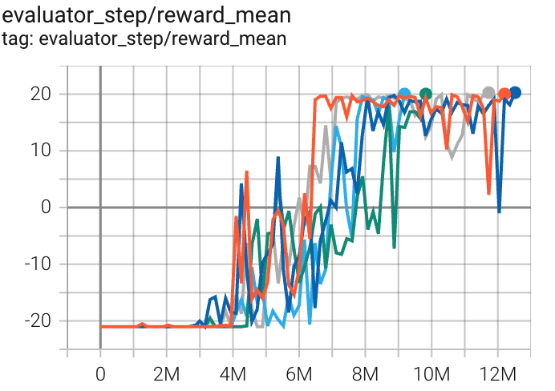
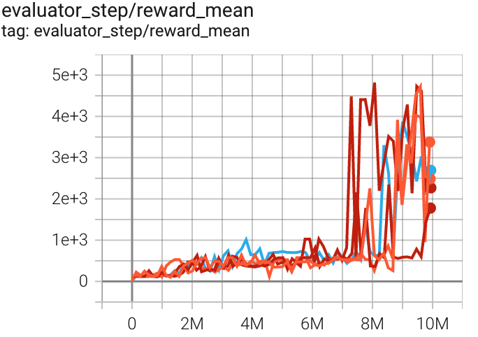

A2C¶
Overview¶
A3C (Asynchronous advantage actor-critic) algorithm is a simple and lightweight framework for deep reinforcement learning that uses asynchronous gradient descent for optimization of deep neural network controllers. A2C(advantage actor-critic), on the other hand, is the synchronous version of A3C where where the policy gradient algorithm is combined with an advantage function to reduce variance.
Quick Facts¶
A2C is a model-free and policy-based RL algorithm.
A2C is an on-policy algorithm.
A2C supports both discrete and continuous action spaces.
A2C can be equipped with Recurrent Neural Network (RNN).
Key Equations or Key Graphs¶
A2C uses advantage estimation in the policy gradient. We implement the advantage by Generalized Advantage Estimation (GAE):
where the k-step advantage function is defined:
Pseudo-code¶

Note
Different from Q-learning, A2C(and other actor critic methods) alternates between policy estimation and policy improvement.
Extensions¶
- A2C can be combined with:
Multi-step learning
RNN
Generalized Advantage Estimation (GAE) GAE is proposed in High-Dimensional Continuous Control Using Generalized Advantage Estimation, it uses exponentially-weighted average of different steps of advantage estimators, to make trade-off between variance and bias of the estimation of the advantage:
\[\hat{A}_{t}^{\mathrm{GAE}(\gamma, \lambda)}:=(1-\lambda)\left(\hat{A}_{t}^{(1)}+\lambda \hat{A}_{t}^{(2)}+\lambda^{2} \hat{A}_{t}^{(3)}+\ldots\right)\]where the k-step advantage estimator \(\hat{A}_t^{(k)}\) is defined as :
\[\hat{A}_{t}^{(k)}:=\sum_{l=0}^{k-1} \gamma^{l} \delta_{t+l}^{V}=-V\left(s_{t}\right)+r_{t}+\gamma r_{t+1}+\cdots+\gamma^{k-1} r_{t+k-1}+\gamma^{k} V\left(s_{t+k}\right)\]When k=1, the estimator \(\hat{A}_t^{(1)}\) is the naive advantage estimator:
\[\hat{A}_{t}^{(1)}:=\delta_{t}^{V} \quad=-V\left(s_{t}\right)+r_{t}+\gamma V\left(s_{t+1}\right)\]When GAE is used, the common values of \(\lambda\) usually belong to [0.8, 1.0].
Implementation¶
The default config is defined as follows:
The network interface A2C used is defined as follows:
The policy gradient and value update of A2C is implemented as follows:
def a2c_error(data: namedtuple) -> namedtuple:
logit, action, value, adv, return_, weight = data
if weight is None:
weight = torch.ones_like(value)
dist = torch.distributions.categorical.Categorical(logits=logit)
logp = dist.log_prob(action)
entropy_loss = (dist.entropy() * weight).mean()
policy_loss = -(logp * adv * weight).mean()
value_loss = (F.mse_loss(return_, value, reduction='none') * weight).mean()
return a2c_loss(policy_loss, value_loss, entropy_loss)
Note
we apply GAE to calculate the advantage when update the actor network with the GAE default parameter gae_lambda =0.95. The target for the update for the value network is obtained by the value function at the current time step plus the advantage function calculated in collectors.
Benchmark¶
environment |
best mean reward |
evaluation results |
config link |
comparison |
|---|---|---|---|---|
Pong (PongNoFrameskip-v4) |
20 |
 | Sb3(17) |
|
Qbert (QbertNoFrameskip-v4) |
4819 |
 | Sb3(3882) Rllib(3620) |
|
SpaceInvaders (SpaceInvadersNoFrame skip-v4) |
826 |

|
Sb3(627) Rllib(692) |
P.S.：
The above results are obtained by running the same configuration on five different random seeds (0, 1, 2, 3, 4)
References¶
Volodymyr Mnih, Adrià Puigdomènech Badia, Mehdi Mirza, Alex Graves, Timothy P. Lillicrap, Tim Harley, David Silver, Koray Kavukcuoglu: “Asynchronous Methods for Deep Reinforcement Learning”, 2016, ICML 2016; arXiv:1602.01783. https://arxiv.org/abs/1602.01783